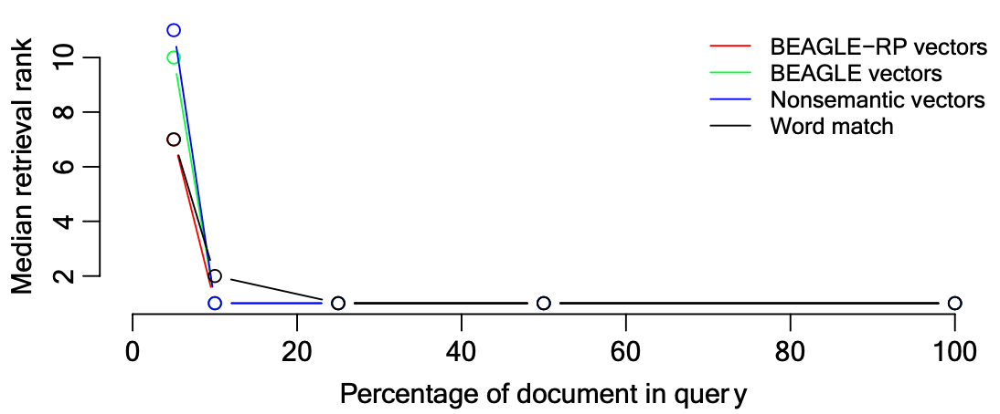
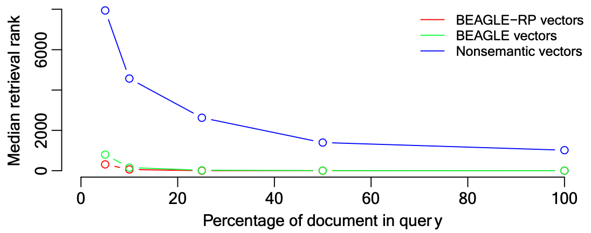
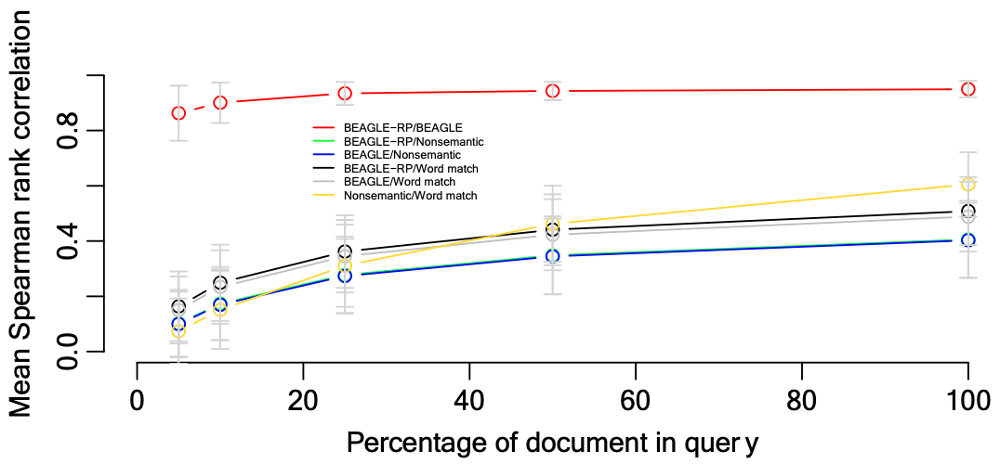

The week’s reading provide an account of various theories infomation and cognitive models of processing and abstraction. Across each conceptualization and theory, a few general themes arise: given the interoperabilty of words and semantics, how are objects and events categorized, indexed, and retrieved as knowledge? And how should all these meanings and relationships be quantified?
Douglas L. Hintzman | University of Oregon
In Hintzman's theory of schema abstraction — experiences are assumed to be represented by several internalized properties:
Properties of emotional tones and modality-specific sensory features (e.g. basic colors and odors)
Properties accessible by more than 1 modality (e.g. intermittency,spatial location)
Properties of primitive abstract relations (e.g. before, same as, greater than, has as parts)
These properties are not acquired by the experience, but the ability to label them seems to be. Experiences share these properties, and the similarity of any multiple experiences is related to the amount of properties they share. The model accounts for episodic and generic memories within a single system.
Considering this model, Hintzman notes that there seems to be 2 ways people learn to classify objects and events.
Through the presentation and naming of categories. (e.g. dogs from cats)
Through explicit communication about definitions and exceptions. (e.g. concept of prime numbers & bats are not birds)
“The model assumes that each experience produces a separate memory trace and that knowledge of abstract concepts is derived from the pool of episodic traces at the time of retrieval.” — p.411.
Memory Trace - A record of an experience preserving the configuration of properties.
Primary memory trace (PM) - The active representation of the current experience.
Secondary memory trace (SM) - The vast pool of largely dormant memory traces.
“Every conscious experience gives rise to its own memory trace, no matter how similar it may be to an earlier one.” — p.412.
Activation of a memory trace implies activation of all its primitive properties via a probe. Properties shared with the probe spreads to the memory trace’s other properties — and returns as an echo.
Characteristics of an echo:
Intensity
Content
“In a system such as this, the structure of the probe is crucial, because it determines which particular combination of SM traces will contribute importantly to the echo.” — p.412.
This activation process is associative learning.
A simulation model of episodic memory.
The model is able to retrieve and disambiguate a prototype of a category when probed with an alias.
The model predicts other basic findings from other schema-abstraction theories an literature.
“Computation of the echo in MINERVA 2 can be seen as an information-processing analog of Semon’s notion of homophony.” — p.426.
Harinder Aujla | University of Winnipeg
Matthew J. C. Crump | Brooklyn College
Matthew T. Cook | University of Manitoba
Randall K. Jamieson | University of Manitoba
Keyword matching suffers several shortcomings:
Assumes a simple relationship between a word and it’s meaning.
Keyword search can be blind where meaning overlaps but vocabulary differs.
Keyword search restricted to the user’s vocabulary.
Since the 1940s, scientists have worked to find a quantitative representation of a word’s meaning. Beginning in the 1990s, the analysis of word semantics pushed forward with the creation of corpus-based vector-space models to ultimately find efficient, broad, and deep analysis of word meaning derived from semantic patterns in printed text (e.g., newspapers and encyclopedias).
Latent semantic analysis (LSA) - 1st generation
Bound Encoding of the Aggregate Language Environment (BEAGLE) - 2nd generation
BEAGLE Random Permutation (BEAGLE-RP) - improvement upon BEAGLE

1,000 simulations of queries composed of 5%, 10%, 25%, 50%, and 100% of the words from each document’s provided abstract, title, and keywords.
If more than 25% of the words in the document were included in the query, all methods retrieved the target document at median rank = 1.
Both semantic methods recovered the target document much better than the nonsemantic method.
This methods affords users to express the intent of their query while not being required to use the exact words in the document they are looking to find.
Simulation 3 — a repetition of Simulation 1 — but measured the agreement (i.e. Spearman rank correlation) among document ranks returned.
Agreement between the returned results list from all methods improves with the percentage of words included in the input query.“We view the difference between traditional and psychologically inspired cognitive computing to be analogous to the difference between traditional and biologically inspired engineering, in which scientists leverage the lessons and study of natural cognitive systems to solve complex applied problems.” —p.11.
This research shows that a descriptive theory of semantics can inform a meaningful search engine interface.
How similar are these systems (LSA. BEAGLE, BEAGLE-RP) when compared to the Google search engine?
How does the system take into account a broader or a dynamic corpus?
We hear a lot about search engines/AI being biased. How do we know a “corpus” of information won’t bias a word’s meaning?
Matthew J. C. Crump | Brooklyn College & Graduate Center at CUNY
Walter Lai | Brooklyn College
Nicholaus P. Brosowsky | Brooklyn College & Graduate Center at CUNY
The study examines typing as a task in order to investigate the underlying cognitive processes involved in sequence of skilled actions.
Research question - Are more predictable letters typed faster than less predictable letters?
Modeling Uncertainty with the Instance Theory - Instance theory assumes that memory traces are retrieved by comparative similarity to a probe or environmental stimuli. The more a stimuli is “practiced”, the better it’s chance of retrieving a quick response than a less practiced stimuli. A new memory trace is stored each time a response is given to a probe. When a familiar probe is encountered again, it automatically starts the retrieval of all stored traces of the familiar probe.
Context, Updating, and Retrieval (CRU) - Vector-based context representations for letters.
It is suggested that information theory can be utilized to identify the natural structure surrounding individual letters.
Interkeystroke intervals (IKSIs)
H measures the entropy or uncertainty
Results - The average interkeystroke interval varies when considering letter position and word length. These variations in typing at the character level (the rate a which someone types specific letters) is explained by the statistics of letter occurrences as they would appear in natural text.
“Our findings fit well with prior work showing instance-based influences over typing performance, and sequencing in general.” — p.11.
Aujla, Harinder, Matthew J. C. Crump, Matthew T. Cook, and Randall K. Jamieson. 2019. “The Semantic Librarian: A Search Engine Built from Vector-Space Models of Semantics.” Behavior Research Methods 51 (6): 2405–18. https://doi.org/10.3758/s13428-019-01268-4.
Crump, Matthew J. C., Walter Lai, and Nicholaus P. Brosowsky. 2019. “Instance Theory Predicts Information Theory: Episodic Uncertainty as a Determinant of Keystroke Dynamics.” Canadian Journal of Experimental Psychology/Revue Canadienne de Psychologie Expérimentale 73 (4): 203–15. https://doi.org/10.1037/cep0000182.
Hintzman, Douglas L. 1986. “"Schema Abstraction" in a Multiple-Trace Memory Model.” Psychological Review, 411–28.